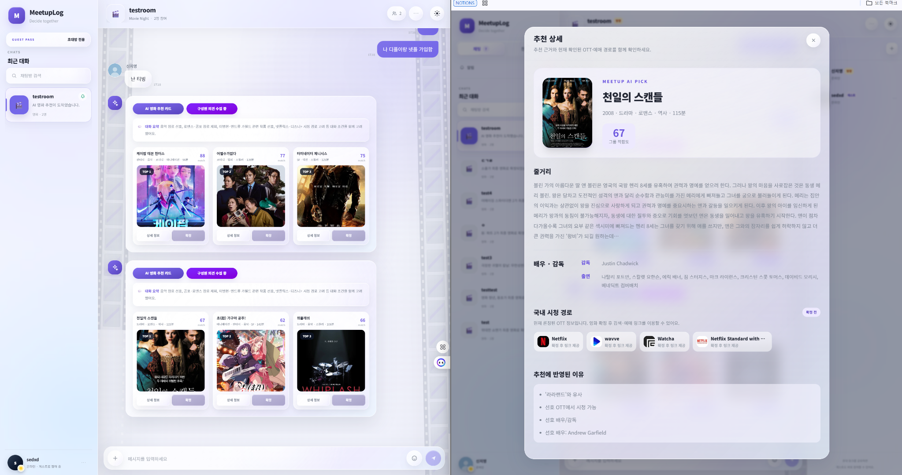

PROJECT / 012026.07 — 2026.08 · TEAM OF 4
AI RECOMMENDATION · NLP · API
MeetUpLog
그룹 채팅 속 다양한 취향을 분석해 영화 선택을 돕는 AI 추천 서비스
모임 참여자들이 채팅으로 나눈 선호·비선호 및 OTT 조건을 분석하고, 영화 후보에 대한 적합도를 계산해 TOP 3 추천 결과를 제공하는 프로젝트입니다.
MY CONTRIBUTION채팅 데이터 분석 · 의미 유사도 · ML 추천 파이프라인
FastAPI 기반 모델 서빙, 문장 임베딩 및 코사인 유사도 계산, 대화 문맥·인물 참조·메타데이터 기반 후보 필터링 작업을 수행했습니다.

ACTUAL PRODUCT SCREENSHOTS ↗